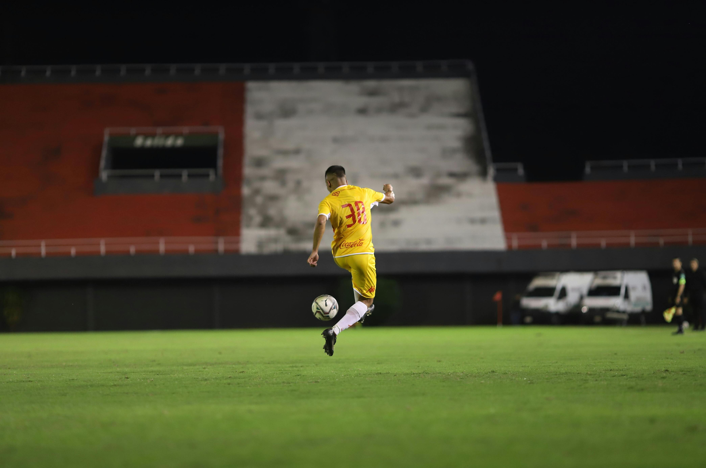

My Fifth Blog Post
August 21, 2025
Football is more than just a game—it’s a passion that connects people across the globe.
From crowded stadiums to small local fields, the sport is celebrated with unmatched energy. Every match brings moments of thrill, teamwork, and determination, keeping fans on the edge of their seats. Legendary players have inspired generations with their skill, hard work, and spirit. Football is not just about winning or losing; it’s about unity, resilience, and the joy of playing together.